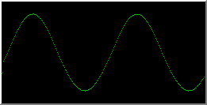
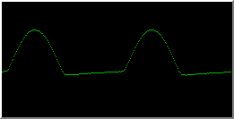
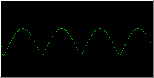
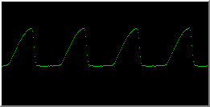
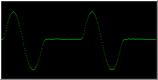
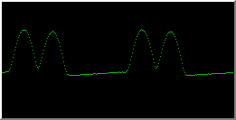
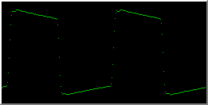
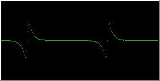

Programmer's Guide to Yamaha YMF 262/OPL3 FM Music Synthesizer
HTML Version 1.12 Last Updated Nov-23-2000
(based on plaintext Version 1.00 Nov-24-1994)
Written by Vladimir Arnost, QA-Software
e-mail: arnost@dcse.fee.vutbr.cz
This manual can be distributed freely if not modified.
Disclaimer
I assume no responsibility for any damages arising out of
use or inability to use this text. No warranty is provided
about correctness of any information in this file. You are
on your own.
Table of Contents
1. Introduction
The chip I am going to describe is getting more and more common, but
programming information is still scarce, so I have decided to fill in this
gap. All information contained in this file is a result of my experience in
Adlib programming, research (read: reverse engineering) and finally of my
effort to write down everything necessary to understand and use this piece
of hardware. No official sources (i.e. development kits, books about this
topic, etc.) were available to me except:
The information below is a combination of known features of Adlib (alias
Yamaha YM 3812/OPL2) and my own uncountable experiments and failures, which
brought out a lot of important details you have to know about the chip.
As far as I know, there are four major sound cards based on OPL3 chip:
- Sound Blaster Pro II (not Sound Blaster Pro I) and many clones
- Sound Blaster 16 and AWE32
- Adlib Gold
- Pro Audio Spectrum Plus/16
I currently have a Sound Blaster Pro II-compatible card only, so all the
programming info I provide will be based on this card. (The other cards
are quite similar, however. They are just wired at different I/O-port
addresses.)
Note:
I assume some knowledge of FM music programming (mainly Adlib FM
synthesizer) in this manual. If you are new to this topic I recommend
you try Adlib first before going higher. Anyway, OPL3 is a direct
descendant of OPL2 (what a surprise), so most features of OPL2 are
also present on OPL3.
2. Description of the Synthesizer
2.1 Some basic facts
My card's user manual says:
"[this card contains] ... a stereo music FM synthesizer with 20
channels consisting of four (4) operators each ... ".
I thought: "Wow -- that's together eighty operators. This must be a
GOOD sound-card."
I was wrong. Just another advertising lie.
So let's clear some facts. First, OPL3 has only thirty-six (36) operators
which can be combined in several ways:
- 18 FM channels (36 operators), or
- 15 FM channels (30 ops) and 5 percussion instruments (6 ops),
giving us 20 channels altogether, or
- up to 6 four-operator FM channels (max 24 ops), the rest again being
divided into two-operator FM channels and drums.
From the table above you can see that not all channels can be used in four-
operator (4-OP) mode -- only a part of the synthesizer is really capable of
making 4-OP sounds -- the rest uses traditional two-operator (2-OP)
mode.
Second, the manual states this card is capable of "stereo" music. Yes, the
quotes are necessary, because the stereo capabilities are very limited.
You are given ability to control output going to left or right channel by
turning it on and off. That's all. So the sound can flow from very left side,
center and very right side. No sound panning, no special stereo effects.
:-(
Well, flaming apart, back to the main topic.
2.2 Synthesis modes
The OPL3 chip is capable of making sounds in several ways:
Two-operator Additive Synthesis
Output of both operators is simply added. It is the simplest way to
make any sound, and it works on both OPL2 and OPL3. The diagram
should make it clear.
+------------+
| |
| Operator 1 +--------+
| | |
+------------+ |
+--------> Output
+------------+ |
| | |
| Operator 2 +--------+
| |
+------------+
Two-operator Frequency Modulation (FM) Synthesis
Output from the first operator (Modulator) is sent to the input of the
second one (Carrier) and is used to modulate (alter) frequency of the
second operator. Only the second operator produces sound. Most of
interesting sounds are made this way. This also works on OPL2.
Hope the picture helps.
+------------+ +------------+
| | | |
| Operator 1 +-------->| Operator 2 +--------> Output
|(Modulator) | | (Carrier) |
+------------+ +------------+
Four-operator "Mess" Modulation Synthesis
All of OPL3's 4-OP configurations are combinations of the above two modes
of synthesis. OPL3 combines these two modes in four ways. I have no words
to describe these four ways. Only the pictures can show their principle.
FM-FM Mode
+-------+ +-------+ +-------+ +-------+
| | | | | | | |
| Op. 1 +----->| Op. 2 +----->| Op. 3 +----->| Op. 4 +-----> Output
| | | | | | | |
+-------+ +-------+ +-------+ +-------+
AM-FM Mode
+-------+
| |
| Op. 1 +-----------------------------------+
| | |
+-------+ |
|
+-------+ +-------+ +-------+ |
| | | | | | |
| Op. 2 +----->| Op. 3 +----->| Op. 4 +-----+-----> Output
| | | | | |
+-------+ +-------+ +-------+
FM-AM Mode
+-------+ +-------+
| | | |
| Op. 1 +----->| Op. 2 +-----+
| | | | |
+-------+ +-------+ |
+-----> Output
+-------+ +-------+ |
| | | | |
| Op. 3 +----->| Op. 4 +-----+
| | | |
+-------+ +-------+
AM-AM Mode
+-------+
| |
| Op. 1 +--------------------+
| | |
+-------+ |
|
+-------+ +-------+ |
| | | | |
| Op. 2 +----->| Op. 3 +-----+-----> Output
| | | | |
+-------+ +-------+ |
|
+-------+ |
| | |
| Op. 4 +--------------------+
| |
+-------+
Nice, aren't they?
The only way I think this can be written is a math formula.
Symbol + (plus) means additive synthesis, and * (asterisk) means
frequency modulation (Op1 * Op2 means operator 1 modulates
operator 2, not vice versa). Here they are:
- FM-FM Mode:
- AM-FM Mode:
- FM-AM Mode:
- AM-AM Mode:
|
(Op1 * Op2 * Op3 * Op4) ----> Output
Op1 + (Op2 * Op3 * Op4) ----> Output
(Op1 * Op2) + (Op3 * Op4) --> Output
Op1 + (Op2 * Op3) + Op4 ----> Output
|
Note 1:
Actually, modes FM-AM and AM-AM are redundant, because they can be
replaced by any pair of 2-OP channels operating at the same frequency.
In FM-AM mode, the operator assignment would be straightforward:
(Op1, Op2) and (Op3, Op4), both running in FM mode.
In the case of AM-AM Mode, a small rearrangement of operators would be
necessary: (Op1, Op4) in AM mode and (Op2, Op3) in FM mode.
Note 2:
This document uses AM as a shorthand form of Additive Synthesis.
Actually this is not any kind of modulation, just a simple addition of two
signals. The AM shorthand was chosen as an "obvious" opposite of FM
(as seen on your radio receiver). Please note that the OPL2/3 chips are
unable to automatically perform any kind Amplitude Modulation other than
tremolo effect.
Percussion Mode
In this mode 6 operators are used to produce five different percussion
instruments:
- Bass Drum (2 operators)
- Snare Drum (1 operator)
- Tom-Tom (1 operator)
- Cymbal (1 operator)
- Hi-Hat (1 operator)
Because these instruments occupy only three melodic channels, only
Bass Drum, Snare Drum and Tom-Tom frequencies can be set. Cymbal and
Hi-Hat frequencies are fixed.
This mode is identical with that of OPL2. For more details see ADLIB.DOC.
3. Programming the Synthesizer
OPL3 may be found at the following addresses:
- OPL3 Base Port Assignment
|
220h or 240h (selectable)
and 388h |
Sound Blaster Pro II, 16, 32, AWE32/64 and Live,
ESS 688, etc. |
| 388h |
Adlib Gold, Windows Sound System |
| 388h ? |
Pro Audio Spectrum Plus/16
(could anyone provide some more info?) |
The base address of the synthesizer will be called "base".
The chip occupies four I/O addresses:
| base+0 |
Primary index register (write), Status register (read) |
| base+1 |
Primary data register (write-only) |
| base+2 |
Secondary index register (write) |
| base+3 |
Secondary data register (write-only) |
The index registers are used to select internal registers and data registers
are used to write to them. Status register returns the state of two timers
built in the chip.
OPL3 contains two sets of registers. The Primary set maps to channels 0-8
(operators 0-17) and the secondary maps to channels 9-17 (operators 18-35).
The reason for this is simple: all these registers wouldn't fit into single
register set.
Unlike Adlib (OPL2), OPL3 doesn't need delay between register writes.
With OPL2 you had to wait 3.3 us after index register write and another
23 us after data register write. On the contrary OPL3 doesn't need
(almost) any delay after index register write and only 0.28 us after data
register write. This means you can neglect the delays and considerably
speed up your music driver. But using reasonable delays will certainly do
no harm.
The data registers can't be read (they are write-only) on both OPL2 and OPL3.
4. Register Map
The registers are grouped in the same manner as in the OPL2 chip. Programs
using both OPL2 and OPL3 chips may use the same code provided that their
direct I/O interface is well written. The only thing you have to change is
operator-to-register mapping, which must accomodate the fact that registers
are spread between two register sets.
(The register map is nearly the same so I dared to copy it from ADLIB.DOC.)
Status Register (base+0):
| D7 |
D6 |
D5 |
D4 |
D3 |
D2 |
D1 |
D0 |
| IRQFlag |
T1Flag |
T2Flag |
Empty fields are considered reserved and should not be used or relied
upon their value.
Data Registers (base+1, base+3):
| Register |
D7 |
D6 |
D5 |
D4 |
D3 |
D2 |
D1 |
D0 |
| 01 |
|
WSEnable |
Test Register |
| 02 |
Timer 1 Count (80 usec resolution) |
| 03 |
Timer 2 Count (320 usec resolution) |
| 04* |
IRQReset |
T1 Mask |
T2 Mask |
|
T2 Start |
T1 Start |
| 04** |
|
4-OP B-E |
4-OP A-D |
4-OP 9-C |
4-OP 2-5 |
4-OP 1-4 |
4-OP 0-3 |
| 05** |
|
OPL3 |
| 08 |
CSW |
Note-Sel |
|
| 20-35 |
Tremolo |
Vibrato |
Sustain |
KSR |
Frequency Multiplication Factor |
| 40-55 |
Key Scale Level |
Output Level (Attenuation) |
| 60-75 |
Attack Rate |
Decay Rate |
| 80-95 |
Sustain Level |
Release Rate |
| A0-A8 |
Frequency Number (Lower 8 bits) |
| B0-B8 |
|
Key-On |
Block Number |
F-Number (high bits) |
| BD |
Trem Dep |
Vibr Dep |
PercMode |
BD On |
SD On |
TT On |
CY On |
HH On |
| C0-C8 |
|
Right |
Left |
FeedBack Modulation Factor |
SynthType |
| E0-F5 |
|
Waveform Select |
| Notes: | |
| * | This register exists only at port base+1 |
| ** | This register exists only at port base+3 |
For register bases
A0,
B0 and
C0
there is one register per output channel.
The primary register set holds the first nine channels (0-8) and the secondary
holds last nine channels (9-17).
For bases
20,
40,
60,
80 and
E0
there are two registers per channel. Each
register maps to one operator. Unfortunately the operator's register numbers
are not continuous. The following table shows which operator maps to which
register set and offset (in hex).
| Op. |
Set/Offset |
Op. |
Set/Offset |
| 0 | 0/00 | 18 | 1/00 |
| 1 | 0/01 | 19 | 1/01 |
| 2 | 0/02 | 20 | 1/02 |
| 3 | 0/03 | 21 | 1/03 |
| 4 | 0/04 | 22 | 1/04 |
| 5 | 0/05 | 23 | 1/05 |
| 6 | 0/08 | 24 | 1/08 |
| 7 | 0/09 | 25 | 1/09 |
| 8 | 0/0A | 26 | 1/0A |
| 9 | 0/0B | 27 | 1/0B |
| 10 | 0/0C | 28 | 1/0C |
| 11 | 0/0D | 29 | 1/0D |
| 12 | 0/10 | 30 | 1/10 |
| 13 | 0/11 | 31 | 1/11 |
| 14 | 0/12 | 32 | 1/12 |
| 15 | 0/13 | 33 | 1/13 |
| 16 | 0/14 | 34 | 1/14 |
| 17 | 0/15 | 35 | 1/15 |
The following tables summarize which operators form a channel in various modes:
1. Two-operator Melodic Mode
+------------+--------------------------------------------------------------+
| Channel | 0 1 2 3 4 5 6 7 8 9 10 11 12 13 14 15 16 17 |
+------------+--------------------------------------------------------------+
| Operator 1 | 0 1 2 6 7 8 12 13 14 18 19 20 24 25 26 30 31 32 |
| Operator 2 | 3 4 5 9 10 11 15 16 17 21 22 23 27 28 29 33 34 35 |
+------------+--------------------------------------------------------------+
2. Two-operator Melodic and Percussion Mode
+------------+--------------------------------------------------------------+
| Channel | 0 1 2 3 4 5 BD SD TT CY HH 9 10 11 12 13 14 15 16 17 |
+------------+--------------------------------------------------------------+
| Operator 1 | 0 1 2 6 7 8 12 16 14 17 13 18 19 20 24 25 26 30 31 32 |
| Operator 2 | 3 4 5 9 10 11 15 21 22 23 27 28 29 33 34 35 |
+------------+--------------------------------------------------------------+
3. Four-operator Melodic Mode
+------------+---------------------------------------------------+
| Channel | 0 1 2 6 7 8 9 10 11 15 16 17 |
+------------+---------------------------------------------------+
| Operator 1 | 0 1 2 12 13 14 18 19 20 30 31 32 |
| Operator 2 | 3 4 5 15 16 17 21 22 23 33 34 35 |
| Operator 3 | 6 7 8 24 25 26 |
| Operator 4 | 9 10 11 27 28 29 |
+------------+---------------------------------------------------+
Channels 3, 4, 5 and 12, 13, 14 can't be used separately because their
operators became part of channels 0, 1, 2 and 9, 10, 11 respectively.
For instance a four-operator channel 1 consists of two two-operator
channels number 1 and 4. (The second 2-OP channel number is always the
first 2-OP channel number plus three.)
OPL3 allows you to enable/disable 4-OP mode separately for any of
channels 0, 1, 2, 9, 10 and 11 (see register
104h in the reference below).
This means for instance when you switch only channel 2 into 4-OP mode,
channels number 0, 1, 3, 4, 6, 7, 8, 9, etc. will be still independent
2-OP channels.
Channels 6, 7, 8 and 15, 16, 17 are always two-operator ones. They can't
be grouped to form four-operator channels.
4. Four-operator Melodic and Percussion Mode
+------------+--------------------------------------------------------+
| Channel | 0 1 2 BD SD TT CY HH 9 10 11 15 16 17 |
+------------+--------------------------------------------------------+
| Operator 1 | 0 1 2 12 16 14 17 13 18 19 20 30 31 32 |
| Operator 2 | 3 4 5 15 21 22 23 33 34 35 |
| Operator 3 | 6 7 8 24 25 26 |
| Operator 4 | 9 10 11 27 28 29 |
+------------+--------------------------------------------------------+
Examples
- Two-operator channel #14 consists of operators 26 and 29 which occupy
these registers (all are in the secondary register set):
12A - Operator 1 - Tremolo/Vibrato/Sustain/KSR/Multiplication
12D - Operator 2 - Tremolo/Vibrato/Sustain/KSR/Multiplication
14A - Operator 1 - Key Scale Level/Output Level
14D - Operator 2 - Key Scale Level/Output Level
16A - Operator 1 - Attack Rate/Decay Rate
16D - Operator 2 - Attack Rate/Decay Rate
18A - Operator 1 - Sustain Level/Release Rate
18D - Operator 2 - Sustain Level/Release Rate
1A5 - Frequency Number (low)
1B5 - Key On/Block Number/Frequency Number (high)
1C5 - FeedBack/Synthesis Type
1EA - Operator 1 - Waveform Select
1ED - Operator 2 - Waveform Select
- Four-operator channel #1 consists of operators 1, 4, 7 and 10. All
registers except register 104h are in the primary set:
104 - bit 1 = 1 - Enable Four-Operator Synthesis in channel #1
21 - Operator 1 - Tremolo/Vibrato/Sustain/KSR/Multiplication
24 - Operator 2 - Tremolo/Vibrato/Sustain/KSR/Multiplication
29 - Operator 3 - Tremolo/Vibrato/Sustain/KSR/Multiplication
2C - Operator 4 - Tremolo/Vibrato/Sustain/KSR/Multiplication
41 - Operator 1 - Key Scale Level/Output Level
44 - Operator 2 - Key Scale Level/Output Level
49 - Operator 3 - Key Scale Level/Output Level
4C - Operator 4 - Key Scale Level/Output Level
61 - Operator 1 - Attack Rate/Decay Rate
64 - Operator 2 - Attack Rate/Decay Rate
69 - Operator 3 - Attack Rate/Decay Rate
6C - Operator 4 - Attack Rate/Decay Rate
81 - Operator 1 - Sustain Level/Release Rate
84 - Operator 2 - Sustain Level/Release Rate
89 - Operator 3 - Sustain Level/Release Rate
8C - Operator 4 - Sustain Level/Release Rate
A1 - Frequency Number (low)
A4 - Unused
B1 - Key On/Block Number/Frequency Number (high)
B4 - Unused
C1 - FeedBack/Synthesis Type (part 1)
C4 - Synthesis Type (part 2)
E1 - Operator 1 - Waveform Select
E4 - Operator 2 - Waveform Select
E9 - Operator 3 - Waveform Select
EC - Operator 4 - Waveform Select
Note:
If a register number is greater than 100h, then it belongs into the
secondary register set. (I use this numbering to emphasize the fact
that the particular register MUST be written to the secondary set.)
See Appendix A.
5. OPL3 Register Reference
Because the registers of OPL3 are almost the same as of OPL2, I have copied
their descriptions from file ADLIB.DOC.
5.1 Status Register:
+-7-+-6-+-5-+-4-+-3-+-2-+-1-+-0-+
|IRQ|T1 |T2 | Not used |
+---+---+---+---+---+---+---+---+
bit 7: IRQ Flag. Set whenever any timer has elapsed.
bit 6: Timer 1 Flag. Set every time the preset time in Timer 1 has
elapsed.
bit 5: Timer 2 Flag. Set every time the preset time in Timer 2 has
elapsed.
Timer interrupts are not wired to any IRQ (why??). The timers can be used
to detect the OPL2/OPL3 chip (see Appendix B).
5.2 Data Registers:
01: Test Register / Waveform Select Enable:
+-7-+-6-+-5-+-4-+-3-+-2-+-1-+-0-+
| |WSE| Test Register |
+---+---+---+---+---+---+---+---+
bit 5: Waveform Select Enable. If clear, all channels will use normal
sine wave. If set, register E0-F5
(Waveform Select) contents will be used.
bits 0-4: Test Register. Must be reset to zero before any operation.
02: Timer 1 Count:
Upward 8 bit counter with a resolution of 80 usec. If an overflow occurs,
the status register bit is set, and the preset value is loaded into the
timer again.
03: Timer 2 Count:
Same as Timer 1, but with a resolution of 320 usec.
004 (port: base+1): IRQ-Reset / Mask / Start:
+-7-+-6-+-5-+-4-+-3-+-2-+-1-+-0-+
|Rst|T1M|T2M| |T2S|T1S|
+---+---+---+---+---+---+---+---+
bit 7: IRQ-Reset. Resets timer and IRQ flags in status register.
All other bits are ignored when this bit is set.
bit 6: Timer 1 Mask. If 1, status register is not affected in
overflow.
bit 5: Timer 2 Mask. Same as above.
bit 1: Timer 2 Start. Timer on/off.
bit 0: Timer 1 Start. Same as above.
104 (port: base+3): Four-Operator Enable:
+-7-+-6-+-5-+-4-+-3-+-2-+-1-+-0-+
| |ChB|ChA|Ch9|Ch2|Ch1|Ch0|
+---+---+---+---+---+---+---+---+
bit 5: Enable four-operator synthesis for channel pair 11 - 14
(decimal).
bit 4: Same as above for channel pair 10 - 13.
bit 3: Same as above for channel pair 9 - 12.
bit 2: Same as above for channel pair 2 - 5.
bit 1: Same as above for channel pair 1 - 4.
bit 0: Same as above for channel pair 0 - 3.
If reset to zero, OPL3 can produce 18 two-operator sounds at a
time.
If nonzero, OPL3 produces four-operator sound in appropriate channel pair.
105 (port: base+3): OPL3 Mode Enable:
+-7-+-6-+-5-+-4-+-3-+-2-+-1-+-0-+
| |OPL|
+---+---+---+---+---+---+---+---+
bit 0: OPL3 Mode Enable. When set, OPL3 extensions (36 operators, 4-OP
synthesis, 8 waveforms, stereo output) can be used. When reset,
the chip behaves as an ordinary OPL2. This bit is zero by default
for compatibility with OPL2.
08: CSW / NOTE-SEL:
+-7-+-6-+-5-+-4-+-3-+-2-+-1-+-0-+
|CSW|N-S| |
+---+---+---+---+---+---+---+---+
bit 7: Composite sine wave mode on/off. All KEY-ON bits must be clear
in order to use this mode. The card is unable to create any other
sound when in CSW mode. (Unfortunately, I have no info how to
use this mode :-< ).
bit 6: NOTE-SEL. Controls the split point of the keyboard. When 0, the
keyboard split is the second bit from the bit 8 of the F-Number.
When 1, the MSb of the F-Number is used. (???)
20-35: Tremolo / Vibrato / Sustain / KSR / Frequency Multiplication
Factor:
+-7-+-6-+-5-+-4-+-3-+-2-+-1-+-0-+
|Tre|Vib|Sus|KSR| Multiplication|
+---+---+---+---+---+---+---+---+
bit 7: Tremolo (Amplitude vibrato) on/off.
bit 6: Frequency vibrato on/off.
bit 5: Sound Sustaining. When 1, operator's output level will be held at
its sustain level until a KEY-OFF is done.
bit 4: Envelope scaling (KSR) on/off. When 1, higher notes are shorter
than lower notes.
bits 0-3: Frequency Multiplication Factor (MULTI). Operator's frequency
is set to (see registers A0,
B0) F-Number * Factor.
+-------+--------+
| MULTI | Factor |
+-------+--------+
| 0 | 1/2 |
| 1 | 1 |
| 2 | 2 |
| 3 | 3 |
| 4 | 4 |
| 5 | 5 |
| 6 | 6 |
| 7 | 7 |
| 8 | 8 |
| 9 | 9 |
| 10 | 10 |
| 11 | 10 |
| 12 | 12 |
| 13 | 12 |
| 14 | 15 |
| 15 | 15 |
+-------+--------+
40-55: Key Scale Level / Output Level:
+-7-+-6-+-5-+-4-+-3-+-2-+-1-+-0-+
| KSL | Output Level |
+---+---+---+---+---+---+---+---+
bits 6-7: Key Scale Level. Attenuates output level towards higher pitch:
+-----+-------------+
| KSL | Attenuation |
+-----+-------------+
| 0 | - |
| 1 | 1.5 dB/oct |
| 2 | 3.0 dB/oct |
| 3 | 6.0 dB/oct |
+-----+-------------+
bits 0-5: Output Level. Attenuates the operator output level. 0 is the
loudest, 3F is the softest. In additive synthesis, varying
the output level of any operator varies the volume of its
corresponding channel. In FM synthesis, varying the output level
of the carrier varies the volume of the channel. Varying the
output of the modulator will change the frequency spectrum
produced by the carrier.
The following table summarizes which operators' output levels
should be updated when trying to change channel output level.
+-------+------+------+------+------+
| Mode | Op 1 | Op 2 | Op 3 | Op 4 |
+-------+------+------+------+------+
| AM | + | + | N/A | N/A |
| FM | - | + | N/A | N/A |
| FM-FM | - | - | - | + |
| AM-FM | + | - | - | + |
| FM-AM | - | + | - | + |
| AM-AM | + | - | + | + |
+-------+------+------+------+------+
60-75: Attack Rate / Decay Rate:
+-7-+-6-+-5-+-4-+-3-+-2-+-1-+-0-+
| Attack Rate | Decay Rate |
+---+---+---+---+---+---+---+---+
bits 4-7: Attack Rate. Determines the rising time for the sound.
The higher the value, the faster the attack.
bits 0-3: Decay Rate. Determines the diminishing time for the sound.
The higher the value, the shorter the decay.
80-95: Sustain Level / Release Rate:
+-7-+-6-+-5-+-4-+-3-+-2-+-1-+-0-+
| Sustain Level | Release Rate |
+---+---+---+---+---+---+---+---+
bits 4-7: Sustain Level. Determines the point at which the sound ceases
to decay and chages to a sound having a constant level. The
sustain level is expressed as a fraction of the maximum level.
0 is the softest and F is the loudest sustain level.
Note that the Sustain-bit in the register 20-35 must
be set for this to have an effect.
bits 0-3: Release Rate. Determines the rate at which the sound disappears
after KEY-OFF. The higher the value, the shorter the release.
A0-A8: Frequency Number:
Determines the pitch of the note. Highest bits of F-Number are stored
in the register below.
B0-B8: Key On / Block Number / F-Number(hi bits):
+-7-+-6-+-5-+-4-+-3-+-2-+-1-+-0-+
| |KEY| Block Num.| Freq |
+---+---+---+---+---+---+---+---+
bit 5: KEY-ON. When 1, channel output is enabled.
bits 2-4: Block Number. Roughly determines the octave.
bits 0-1: Frequency Number. 2 highest bits of the above register.
The following formula is used to determine F-Number and Block:
F-Number = Music Frequency * 2^(20-Block) / 49716 Hz
Note:
In four-operator mode only the register value of Operators 1 and 2
is used, value of Operators 3 and 4 in this register is ignored.
In other words: one channel uses only one frequency, block and KEY-ON
value at a time, regardless whether it is a two- or four-operator
channel.
BD: Tremolo Depth / Vibrato Depth / Percussion Mode / BD/SD/TT/CY/HH On:
+-7-+-6-+-5-+-4-+-3-+-2-+-1-+-0-+
|Tre|Vib|Per|BD |SD |TT |CY |HH |
+---+---+---+---+---+---+---+---+
bit 7: Tremolo (Amplitude Vibrato) Depth. 0 = 1.0dB, 1 = 4.8dB.
bit 6: Frequency Vibrato Depth. 0 = 7 cents, 1 = 14 cents.
A "cent" is 1/100 of a semi-tone.
bit 5: Percussion Mode. 0 = Melodic Mode, 1 = Percussion Mode.
bit 4: BD On. KEY-ON of the Bass Drum channel.
bit 3: SD On. KEY-ON of the Snare Drum channel.
bit 2: TT On. KEY-ON of the Tom-Tom channel.
bit 1: CY On. KEY-ON of the Cymbal channel.
bit 0: HH On. KEY-ON of the Hi-Hat channel.
Note:
KEY-ON bits of channels 6, 7 and 8 must be clear and their
F-Nums, Attack/Decay/Release rates, etc. must be set properly
to use percussion mode.
C0-C8: FeedBack Modulation Factor / Synthesis Type:
+-7-+-6-+-5-+-4-+-3-+-2-+-1-+-0-+
| | R | L | FeedBack |Syn|
+---+---+---+---+---+---+---+---+
bit 5: Right Speaker Enable. When set, channel output goes to right
speaker.
bit 4: Left Speaker Enable. When set, channel output goes to left
speaker. At least one of these bits must be set to hear
the channel.
These two bits can be used to realize sound "panning", but this
method offers only three pan positions (left/center/right).
These bits apply only to operators producing sound (Carriers).
Modulators are not affected by their setting.
bits 1-3: FeedBack Modulation Factor. If 0, no feedback is present. If 1-7,
operator 1 will send a portion of its output back into itself.
+----------+--------+
| FeedBack | Factor |
+----------+--------+
| 0 | 0 |
| 1 | n/16 |
| 2 | n/8 |
| 3 | n/4 |
| 4 | n/2 |
| 5 | n |
| 6 | 2.n |
| 7 | 4.n |
+----------+--------+
When in four-operator mode, the FeedBack value is used only by
Operator 1, value of Operators 2, 3 and 4 is ignored.
bit 0: Synthesis Type. 1 = Additive synthesis, 0 = Frequency Modulation
In four-operator mode, there are two bits controlling the
synthesis type. Both are the bit 0 of register C0, one of
Operators 1 and 2 and the second of Operators 3 and 4.
+--------+--------+--------+
| Op 1&2 | Op 3&4 | Type |
+--------+--------+--------+
| 0 | NONE | FM |
| 1 | NONE | AM |
| 0 | 0 | FM-FM |
| 1 | 0 | AM-FM |
| 0 | 1 | FM-AM |
| 1 | 1 | AM-AM |
+--------+--------+--------+
E0-F5: Waveform Select:
+-7-+-6-+-5-+-4-+-3-+-2-+-1-+-0-+
| | WaveForm |
+---+---+---+---+---+---+---+---+
bits 0-2: WaveForm Select (WS):
- WaveForm 0: Sine

- WaveForm 1: Half-Sine

- WaveForm 2: Abs-Sine

- WaveForm 3: Pulse-Sine

|
- WaveForm 4: Sine - even periods only

- WaveForm 5: Abs-Sine - even periods only

- WaveForm 6: Square

- WaveForm 7: Derived Square

|
Note:
Bit 5 of register 01 must be set to use waveforms other than sine.
Waveforms 4-7 are available only on OPL3.
Appendixes
Appendix A - Examples
These examples show a few working routines used in my MUS Player.
They are written in Borland C++ 3.1 but should be easy to translate to any
other language.
--------------------------------- cut here ---------------------------------
// I prefer using these Assembler-like types
typedef unsigned int WORD;
typedef unsigned char BYTE;
/*
* FM Synthesizer base port. SB Pro II - 0x220, Adlib 0x388
*/
WORD FMport = 0x220;
/*
* Enables OPL3 extensions.
*/
WORD OPL3 = 1;
/*
* Direct write to any Adlib/SB Pro II FM synthetiser register.
* reg - register number (range 0x001-0x0F5 and 0x101-0x1F5). When high byte
* of reg is zero, data go to port FMport, otherwise to FMport+2
* data - register value to be written
*/
BYTE FMwriteReg(WORD reg, BYTE data)
{
asm {
mov dx,FMport
mov ax,reg
or ah,ah // high byte is nonzero -- write to port base+2
jz out1
inc dx
inc dx
}
out1: asm {
out dx,al
mov cx,6
}
loop1:asm { // delay between writes
in al,dx
loop loop1
inc dx
mov al,data
out dx,al
dec dx
mov cx,36
}
loop2:asm { // delay after data write
in al,dx
loop loop2
}
return _AL;
}
/*
* Write to an operator pair. To be used for register bases of 0x20, 0x40,
* 0x60, 0x80 and 0xE0.
*/
void FMwriteChannel(BYTE regbase, BYTE channel, BYTE data1, BYTE data2)
{
static BYTE adlib_op[] = {0, 1, 2, 8, 9, 10, 16, 17, 18};
static BYTE sbpro_op[] = { 0, 1, 2, 6, 7, 8, 12, 13, 14,
18, 19, 20, 24, 25, 26, 30, 31, 32};
static WORD rg[] = {0x000,0x001,0x002,0x003,0x004,0x005,
0x008,0x009,0x00A,0x00B,0x00C,0x00D,
0x010,0x011,0x012,0x013,0x014,0x015,
0x100,0x101,0x102,0x103,0x104,0x105,
0x108,0x109,0x10A,0x10B,0x10C,0x10D,
0x110,0x111,0x112,0x113,0x114,0x115};
if (OPL3)
{
register WORD reg = sbpro_op[channel];
FMwriteReg(rg[reg]+regbase, data1);
FMwriteReg(rg[reg+3]+regbase, data2);
} else {
register WORD reg = regbase+adlib_op[channel];
FMwriteReg(reg, data1);
FMwriteReg(reg+3, data2);
}
}
/*
* Write to channel a single value. To be used for register bases of
* 0xA0, 0xB0 and 0xC0.
*/
void FMwriteValue(BYTE regbase, BYTE channel, BYTE value)
{
static WORD ch[] = {0x000,0x001,0x002,0x003,0x004,0x005,0x006,0x007,0x008,
0x100,0x101,0x102,0x103,0x104,0x105,0x106,0x107,0x108};
register WORD chan;
if (OPL3)
chan = ch[channel];
else
chan = channel;
FMwriteReg(regbase + chan, value);
}
--------------------------------- cut here ---------------------------------
Appendix B - Detection Methods
OPL2 Detection
An official method of Adlib (OPL2) detection is:
- Reset Timer 1 and Timer 2: write 60h to register 4.
- Reset the IRQ: write 80h to register 4.
Note: Steps 1 and 2 can't be combined together.
- Read status register: read port base+0 (388h). Save the result.
- Set Timer 1 to FFh: write FFh to register 2.
- Unmask and start Timer 1: write 21h to register 4.
- Wait in a delay loop for at least 80 usec.
- Read status register: read port base+0 (388h). Save the result.
- Reset Timer 1, Timer 2 and IRQ as in steps 1 and 2.
- Test the results of the two reads: the first should be 0,
the second should be C0h.
If either is incorrect, then the OPL2 is not present.
Notes:
- You should AND the result bytes with E0h because the unused bits
are undefined.
- This testing method doesn't work in some SoundBlaster compatible
cards.
OPL3 Detection
- Detect OPL2. If present, continue.
- Read status register: read port base+0.
- AND the result with 06h.
- If the result is zero, you have OPL3, otherwise OPL2.
Note:
This is NOT an official method. I have dug it out of a sound driver.
I haven't tested it, because I haven't an OPL2 card (Adlib, SB Pro I).
Nevertheless it "detects" my SB Pro II properly. ;-)
Another possible detection method for distinguishing between SB Pro I and
SB Pro II would be to try to detect OPL2 at I/O port base+0 and then at port
base+2. The first test should succeed and the second should fail if OPL3 is
present. (Remember: SB Pro I contains twin OPL2 chips at addresses base+0 and
base+2, while SB Pro II contains one OPL3 chip at I/O address base+0 thru
base+3).
The BLASTER Environment Variable
Perhaps the most recommended "detection" method. Reading this variable avoids
blindfold I/O port scanning and possible device conflicts. The user is
responsible for its proper setting.
The variable has this format:
BLASTER=Aaddr Iirq Ddma8
Hdma16 Pmidi Eemu Ttype
A: Base I/O address given in hex. For most Sound Blasters the default is 220.
I: IRQ Number (decimal). Default 7 (old SB and SB Pro), 5 (SB 16, etc.).
D: DMA Number (decimal). Default 1.
H: High DMA Number (decimal). Default 5 (on SB 16 and newer cards only)
P: MPU-401 MIDI port (hexadecimal). Default 330 (on SB 16 and newer cards)
E: EMU-8000 base port (hexadecimal). Default 620 (on AWE32 and newer cards)
T: Card Type (decimal):
1 - Sound Blaster 1.5
2 - Sound Blaster Pro I
3 - Sound Blaster 2.0
4 - Sound Blaster Pro II
6 - Sound Blaster 16/AWE 32/32/64
Examples:
BLASTER=A220 I7 D1 T4 (old 8-bit Sound Blaster Pro II)
BLASTER=A220 I5 D1 H5 P330 E620 T6 (16-bit Sound Blaster 32)
References
Title: The PC Games Programmers Encyclopedia
Authors: Mark Feldman and many others on Usenet and Internet
WWW: http://www.qzx.com/pc-gpe/
FTP: ftp://x2ftp.oulu.fi/pub/msdos/programming/gpe/pcgpe10.zip - 700KB
... you can find (almost) everything you need there
Title: Sound Blaster - The Official Book
Authors: Richard Heimlich, David M. Golden, Ivan Luk, Peter M. Ridge
Publishers: Osborne/McGraw Hill
ISBN: 0-07-881907-5
... this is a number-one in my book-wishlist. If anyone wanted to get rid of
the book, I wouldn't scorn it ... :-)
Title: The SoundBlaster Developer Kit
Publishers: Creative Labs Inc
Creative Technology PTE LTD
... I wonder if you can find something comprehensible in that.
 Back to previous page.
Back to previous page.
© 1996-2000 Vladimir Arnost
Last modified on
19. January 2009
If you have any suggestions, bug reports or ideas how to improve these
pages, please feel free to
mail me.